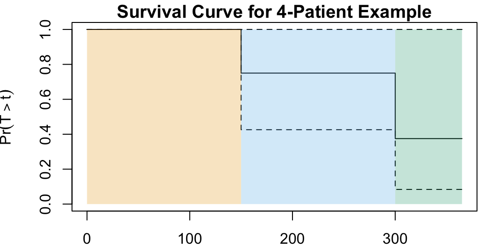

Week 12: Survival Analysis
DSAN 5300: Statistical Learning
Spring 2025, Georgetown University
Monday, April 7, 2025
Survival Analysis Basics
- Lots of information crunched into this one figure!

ISLR Figure 11.1
Read Left to Right \(\Rightarrow\) Sequence of Events

Modified ISLR Figure 11.1
“Slice” at Deaths \(\Rightarrow\) At-Risk Observations

Modified ISLR Figure 11.1
The Actual Dataset We Get
| Patient (\(i\)) | Observed Outcome (\(Y_i\)) | Observed? (\(\delta_i\)) |
|---|---|---|
| 1 | 300 | 1 |
| 2 | 365 | 0 |
| 3 | 150 | 1 |
| 4 | 250 | 0 |
The Dataset We Can Infer
| Patient (\(i\)) | \(Y_i\) | \(\delta_i\) | Survival Time (\(T_i\)) | Censor Point (\(C_i\)) |
|---|---|---|---|---|
| 1 | 300 | 1 | 300 | NA |
| 2 | 365 | 0 | NA |
365 |
| 3 | 150 | 1 | 150 | NA |
| 4 | 250 | 0 | NA |
250 |
…If we’re testing effect of treatment, which column do we most care about?
Measuring Effect of Treatment!
| Patient (\(i\)) | \(Y_i\) | \(\delta_i\) | Survival Time (\(T_i\)) | Censor Point (\(C_i\)) |
|---|---|---|---|---|
| 1 | 300 | 1 | 300 | NA |
| 2 | 365 | 0 | NA |
365 |
| 3 | 150 | 1 | 150 | NA |
| 4 | 250 | 0 | NA |
250 |
…If we’re testing effect of treatment, \(T_i\) is what we care about!
Kaplan-Meier Estimator
- Defined at death points \(d_k\) as
\[ \widehat{S}(d_k) = \prod_{j=1}^{k} \Bigl( \overbrace{ \frac{ r_j - q_j }{ \underbrace{r_j}_{\mathclap{\small\text{Num At Risk}}} } }^{\mathclap{\small\text{Num Survived}}} \Bigr) \]
- Then, for \(t \in (d_k, d_{k+1})\), \(\widehat{S}(t) = \widehat{S}(d_k)\), producing stepwise survival function:

ISLR Figure 11.2
Kaplan-Meier Estimator for our Example
Two death points: \(d_1 = 150, d_2 = 300\) (plus start point \(d_0 = 0\))
\[ \begin{align*} {\color{#e69f00}\widehat{S}(d_0)} &= \prod_{j=0}^{0}\left( \frac{r_k - q_k}{r_k} \right) = \left( \frac{4 - 0}{4} \right) = {\color{#e69f00}\boxed{1}} \\ {\color{#56b4e9}\widehat{S}(d_1)} &= \prod_{j=0}^{1}\left( \frac{r_k - q_k}{r_k} \right) = {\color{#e69f00}\boxed{1}} \cdot \left( \frac{r_1-q_1}{r_1} \right) \\ &= {\color{#e69f00}\boxed{1}} \cdot \left( \frac{4 - 1}{4} \right) = {\color{#56B4E9}\boxed{\frac{3}{4}}} \\ {\color{#009e73}\widehat{S}(d_2)} &= \prod_{j=0}^{2}\left( \frac{r_k - q_k}{r_k} \right) = {\color{#e69f00}\boxed{1}} \cdot {\color{#56b4e9}\boxed{\frac{3}{4}}} \cdot \left( \frac{r_2 - q_2}{r_2} \right) \\ &= {\color{#e69f00}\boxed{1}} \cdot {\color{#56b4e9}\boxed{\frac{3}{4}}} \cdot \left( \frac{2-1}{2} \right) = \frac{3}{4}\cdot \frac{1}{2} = {\color{#009e73}\boxed{\frac{3}{8}}} \end{align*} \]
Code
library(tidyverse) |> suppressPackageStartupMessages()
library(survival) |> suppressPackageStartupMessages()
library(latex2exp) |> suppressPackageStartupMessages()
surv_df <- tribble(
~id, ~y, ~delta,
1, 300, 1,
2, 365, 0,
3, 150, 1,
4, 250, 0
)
surv_obj <- Surv(surv_df$y, event = surv_df$delta)
surv_model <- survfit(surv_obj ~ 1)
# Plot options
par(mar=c(2,4,1.25,1.0)) # bltr
y_label <- TeX("$\\Pr(T > t)$")
plot(
surv_model,
ylab=y_label,
lwd=1,
main="Survival Curve for 4-Patient Example"
) # conf.int=FALSE
# Add colors
# lines(c(0, 150), c(1.0, 1.0), type='l', col='#E69F00', lwd=2)
rect(xleft = 0, xright = 150, ybottom = 0, ytop = 1.0, col="#E69F0040", lwd=0)
# lines(c(150, 300), c(3/4, 3/4), type='l', col='#56B4E9', lwd=2)
rect(xleft = 150, xright = 300, ybottom = 0, ytop = 1.0, col="#56B4E940", lwd=0)
# lines(c(300, 365), c(3/8, 3/8), type='l', col='#009E73', lwd=2)
rect(xleft = 300, xright = 365, ybottom = 0, ytop = 1.0, col="#009E7340", lwd=0)
Comparing Survival Curves
- Are female patients more likely to survive than male patients?

ISLR Figure 11.3
Proportional Hazard Assumption
\[ h(t \mid x_i) = h_0(t)\exp\left[ \sum_{j=1}^{p}\beta_j x_{ij} \right] \iff \underbrace{\log[h(t \mid x_i)]}_{\hbar(t \mid x_i)} = \underbrace{\log[h_0(t)]}_{\hbar_0(t)} + \sum_{j=1}^{p}\beta_j x_{ij} \]
Basically: Features \(X_{j}\) shift [log] baseline hazard function \(\hbar_0(t)\) up and down by constant amounts, via multiplication by \(e^{\beta_j}\)
- Top row: \(\hbar_0(t)\) in black, \(X_j = 1\) shifts it down via multiplication by \(e^{\beta_j}\) to form \(\hbar(t \mid X_j)\) in green
- Bottom row: Proportional hazard violated, since \(X_j = 1\) associated with different changes to \(\hbar_0(t)\) at different \(t\) values

Survival Curves for Each Diagnosis
Code
library(extrafont) |> suppressPackageStartupMessages()
par(cex=1.2, family="CMU Sans Serif")
diag_levels <- c("Meningioma", "LG glioma", "HG glioma")
diag_df <- tibble(
diagnosis = diag_levels,
sex = rep("F", 3),
loc = rep("Supra", 3),
ki = rep(mean(bc_df$ki), 3),
gtv = rep(mean(bc_df$gtv), 3),
stereo = rep("SRT", 3)
)
survplots <- survfit(full_cox_model, newdata = diag_df)
plot(
survplots,
main = "Survival Curves by Diagnosis",
xlab = "Months", ylab = "Survival Probability",
col = cb_palette, lwd=1.5
)
legend(
"bottomleft",
diag_levels,
col = cb_palette, lty = 1, lwd=1.5
)
Less Straightforward: Curves for Each ki, gtv Val
- Technically a different survival curve for each value of
ki\(\in [0, 100]\),gtv\(\in (0, \infty)\)


- One approach: bin into (low, medium, high) via terciles, one curve per bin median:
Code
library(latex2exp) |> suppressPackageStartupMessages()
ki_df <- tibble(
diagnosis = rep("Meningioma", 3),
sex = rep("F", 3),
loc = rep("Supra", 3),
ki = terc_df$med_ki,
gtv = rep(mean(bc_df$gtv), 3),
stereo = rep("SRT", 3)
)
ki_plots <- survfit(full_cox_model, newdata = ki_df)
par(
mar=c(4.0,4.0,1.2,0.5),
cex=1.2,
family="CMU Sans Serif"
) # bltr
plot(
ki_plots,
main = "Survival Curves by KI Tercile",
xlab = "Months",
ylab = TeX("$\\Pr(T > t)$"),
lwd = 1,
col = cb_palette
)
ki_labs <- c(
TeX("$h( t \\, | \\, KI = 70 )$"),
TeX("$h( t \\, | \\, KI = 80 )$"),
TeX("$h( t \\, | \\, KI = 90 )$")
)
legend(
"bottomleft",
ki_labs, lwd=1,
col = cb_palette, lty = 1, cex=0.8
)